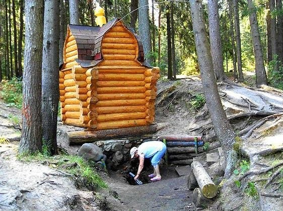
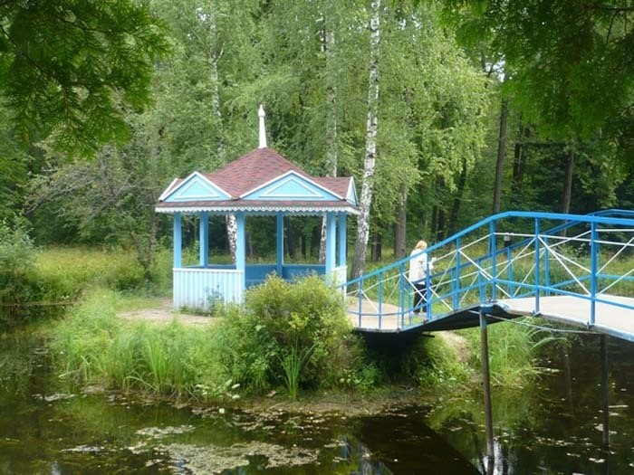

Конаково
Природа
1.Конаковский Бор
«Лесопарк Конаковский» состоит из двух частей: северная часть памятника природы издавна называется «Конаковский Бор». Здесь на песчаных почвах произрастает сосновый лес, представляющий главную ценность. Бор подходит к берегу водохранилища. Некоторые экземпляры сосен впечатляют своими размерами. Южная часть характеризуется большим участком заболоченных фрагментов, связанных с выходами глин. По преданиям, Бор этот очень старинный и почитаемый. До сих пор он считается главной достопримечательностью города. Уездный землемер летом 1828 года на месте современного бора сделал надпись «строевой сосновый лесъ», а условными знаками отметил, что лес этот спелый, т.е. что стоял он на сей земле не менее века. Есть ещё приписка о том, что отмечается этот бор на в межевых документах 1770 года.
2.Родники

Родники расположены на правом берегу Волги, в лесном массиве «Конаковский бор». Три источника находятся поблизости друг от друга. Старожилы помнят эти родники еще с 1930-х годов, но по всей видимости, источники существовали уже намного раньше.
3.Карачаровский парк

Карачарово – село с истинно русской историей, место, где располагается старинная усадьба, построенная при правлении великого Ивана III, князя Тверского. Усадьба была сооружена в дар братьям Карачарам. При ней был разбит парк.Примечательно сходство парка с Лондонским Гайд-парком: центр дает начало восьми аллеям. Каждая из которых имеет характерные древесные насаждения (дубовая аллея, аллея ясеней, еловая, кленовая, осиновая, березовая и другие).